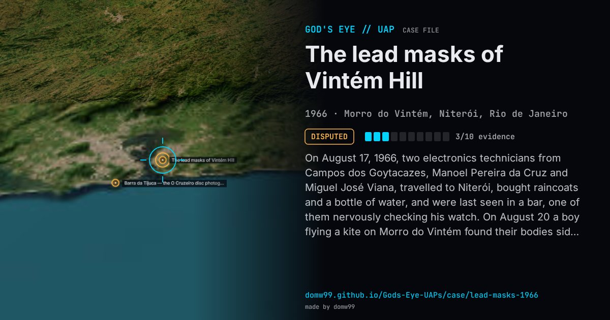

The lead masks of Vintém Hill

On August 17, 1966, two electronics technicians from Campos dos Goytacazes, Manoel Pereira da Cruz and Miguel José Viana, travelled to Niterói, bought raincoats and a bottle of water, and were last seen in a bar, one of them nervously checking his watch. On August 20 a boy flying a kite on Morro do Vintém found their bodies side by side, dressed in suits and raincoats, with crude lead eye-masks beside them. There were no signs of violence. A notebook held the instructions “16:30 be at the specified place. 18:30 swallow capsules, after the effect protect metals, await signal, mask”. The autopsy came weeks late and no toxicology was done, so the cause of death was never established. Days after the discovery, Rio newspapers reported that a resident had seen a round orange object rising and falling over the hill on the night the men went up, and the case entered UFO literature through Flying Saucer Review in 1967. There is no evidence linking the light to the deaths; a friend told police the men belonged to a group of “scientific spiritualists” who tried to contact other beings, which points to drugs taken in a ritual.
Explanation
The likeliest account is an accidental overdose during an attempt at contact: a friend said the men were “scientific spiritualists”, their notebook told them to take capsules and wait for a signal, and mask-making materials were found at their homes. No toxicology was ever done, so the cause of death is officially unknown.
What was seen
Shape: A round orange light rising and falling over the hill (one resident’s report)
Witnesses: A boy who found the bodies; police; a local resident who reported an orange light
Duration: Unknown
Sources
Browse
- Brazil
- 1960s
- Disputed
- Close encounters
- Official government documents
- Physical traces
- Lights and fireballs
- Spheres and orbs